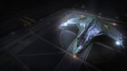

Макс. скорость / с форсажем
240 / 350 m/s
Истребитель для манёвренного боя, главные достоинства которого — поворотливость и цена. Три малых орудия и лучшая скорость разворота в классе делают полёт в удовольствие, но самая слабая защита в классе ограничивает возможности корабля. Он отлично учит маневрировать и даёт острые ощущения за копейки, но выносливости от него ждать не стоит. Один удачный залп заканчивает бой: Eagle побеждает, пока по нему не попадают.

У этого корабля оценка пригодности по шкале 1–100 отражает возможности полностью улучшенной у инженеров сборки для этой роли в сравнении со всеми другими кораблями той же роли. См. как выставляются оценки кораблям.
Eagle Mk II — сверхлёгкий перехватчик Core Dynamics и самый манёвренный серийный корабль в своём классе. Три малых орудийных крепления и скорость разворота, с которой мало кто сравнится, делают его настоящим истребителем: он садится противнику на хвост и не отстаёт. При цене около 11 000 кредитов это ещё и один из самых дешёвых кораблей в игре.
За манёвренность приходится платить всем остальным. Корпус хрупкий, как яичная скорлупа, щит слаб, есть только одно внешнее крепление и один небольшой военный отсек, а три малых орудия наносят мало урона. Eagle не прощает ошибок: он побеждает, уворачиваясь и разворачиваясь быстрее противника, но от одного удачного залпа может развалиться. Летать на нём увлекательно, и он отлично учит манёвренному бою, но сам корабль — буквально стеклянная стрела.
Тренировка манёвренного боя и острые ощущения за копейки: учитесь разворачиваться и держаться у цели, летайте в безопасные районы добычи ресурсов (RES) и наслаждайтесь поворотливостью там, где увернуться важнее, чем сильно ударить.
Eagle как боевой корабль определяют четыре особенности:
Это исключительно хрупкий корабль: самые слабые корпус и щиты в классе, одно внешнее крепление, силовая установка класса 2 и три малых орудия. Он не выдерживает ни одного серьёзного залпа, наносит мало урона и гибнет от секундной ошибки. Манёвренность — его единственное преимущество, а всё остальное принесено в жертву. Это учебный корабль и игрушка, а не основная машина на долгий срок.
Лучшая в классе манёвренность вытягивает оценку до 55, но три малых орудия, самый слабый щит и хрупкий корпус с прочностью 72 жёстко ограничивают возможности.
Итоговая оценка 55/100 выведена по критериям боевой роли, расположенным по приоритету. У каждого критерия есть вес (доля от 100). Корабль получает часть баллов по каждому из них в зависимости от того, как выглядит на фоне всех соперников. Эти баллы складываются в итоговую оценку.
| Критерий | Баллы | Почему столько |
|---|---|---|
| Орудийные крепления | 16/30 | Три малых крепления (3S) — щедро для корпуса массой 50 т, но все орудия малые, поэтому даже с инженерными улучшениями длительный урон в секунду остаётся невысоким (от низкого до среднего). Креплений больше, чем у Sidewinder, но по огневой мощи Eagle уступает любому сопернику со средними орудиями, например Courier (3M) или Cobra Mk V (3M 2S). |
| Распределитель энергии | 5/10 | Распределителю энергии класса 2 нужен рейтинг A, чтобы одновременно питать три орудия и форсаж. Для лёгкого вооружения и низкого расхода энергии WEP этого хватает, но это один из самых маленьких распределителей в данной роли, без запаса для длительной стрельбы. |
| Щит | 4/15 | Базовый щит даёт ~78 МДж, меньше всех в классе. Даже с двухконтурным генератором, единственным внешним усилителем и инженерными улучшениями предел составляет около ~280 МДж, намного меньше, чем у кораблей с упором на щиты. Серьёзный залп он не выдержит. |
| Броня и отсеки | 5/15 | Базовая броня равна 72: хрупкий корпус, один военный отсек класса 2 и скромный набор отсеков 3·2·1·1·1·1. С инженерными улучшениями корпуса и несколькими усилителями корпуса (HRP) эффективная броня достигает всего ~350 — это самая низкая живучесть среди боевых кораблей с малой площадкой. |
| Манёвренность | 20/20 | Лучшая манёвренность в классе: самый поворотливый серийный корабль своей категории, с базовыми 240/350 м/с и около ~430 м/с на форсаже после инженерных улучшений. Это его единственное лидерство и основа выживания: он разворачивается быстрее любого соперника. |
| Оснащение и гибкость | 5/10 | Единственное внешнее крепление вынуждает ограничиться одним усилителем щита с улучшением «Усиленная конструкция», а единственный военный отсек класса 2 ограничивает усиление корпуса. На малую площадку можно сесть где угодно, цена ~11 тыс. кр. ничтожна, но свободы выбора в боевой сборке почти нет. |
| Взвешенный итог | 55/100 | Совпадает с оценкой пригодности этого корабля для выбранной роли в заголовке. |
Веса отражают редакционную расстановку приоритетов для этой роли, а не формулу из игры. Длина полосы показывает, какую часть баллов корабль получил по критерию: самые длинные принесли больше всего баллов, самые короткие показывают слабые места. См. как выставляются оценки кораблям.
В каждой таблице корабли оцениваются именно для боя, с разделением по размерам посадочных площадок. Столбец Орудийные крепления показывает набор орудийных креплений, то есть основу под вооружение. Оценка пригодности по шкале 1–100 та же, что и на остальном сайте.
| Корабль | Класс | Орудийные крепления | Плюсы и минусы | Оценка |
|---|---|---|---|---|
| Kestrel Mk II | Малая | 3L 2S | Оценка выше; крепления; гибкостьБроня | 85 |
| Vulture | Малая | 2L | Оценка выше; манёвренность; щитБроня | 80 |
| Cobra Mk V | Малая | 3M 2S | Оценка выше; гибкость; крепленияРаспределитель | 78 |
| Imperial Courier | Малая | 3M | Оценка выше; манёвренность; щитБроня | 70 |
| Viper Mk IV | Малая | 2M 2S | Оценка выше; броня; распределительМанёвренность | 66 |
| Diamondback Explorer | Малая | 1L 2M | Оценка выше; гибкость; манёвренностьБроня | 65 |
| Viper Mk III | Малая | 2M 2S | Оценка выше; манёвренность; крепленияБроня | 63 |
| Diamondback Scout | Малая | 2M 2S | Оценка выше; гибкость; броняЩит | 60 |
| Cobra Mk III | Малая | 2M 2S | Оценка выше; манёвренность; распределительЩит | 58 |
| Eagle Mk II здесь | Малая | 3S | — этот корабль (точка отсчёта) | 55 |
| Imperial Eagle | Малая | 1M 2S | Манёвренность; крепленияОценка ниже; гибкость | 54 |
| Cobra Mk IV | Малая | 2M 3S | Крепления; броняОценка ниже; манёвренность | 44 |
| Sidewinder Mk I | Малая | 2S | Манёвренность; гибкостьОценка ниже; крепления | 40 |
Оценены 13 боевых кораблей с малой площадкой; лидирует Kestrel Mk II (85). Все они садятся на площадки того же класса и являются прямыми альтернативами этому кораблю.
| Корабль | Класс | Орудийные крепления | Плюсы и минусы | Оценка |
|---|---|---|---|---|
| Federal Corvette | Большой | 2H 1L 2M 2S | Оценка выше; крепления; распределительЩит | 98 |
| Imperial Cutter | Большой | 1H 2L 4M | Оценка выше; распределитель; щитМанёвренность | 91 |
| Anaconda | Большой | 1H 3L 2M 2S | Оценка выше; распределитель; щитМанёвренность | 88 |
| Imperial Clipper | Большой | 2L 2M | Оценка выше; манёвренность; распределительОрудийные крепления | 79 |
| Type-10 Defender | Большой | 4L 3M 2S | Оценка выше; крепления; броняМанёвренность | 78 |
Среди боевых кораблей с большой площадкой оценены 5; лидирует Federal Corvette (98). Это более крупные площадки и бюджеты. По характеристикам такие корабли превосходят Eagle, но требуют площадки другого класса.
| Корабль | Класс | Орудийные крепления | Плюсы и минусы | Оценка |
|---|---|---|---|---|
| Fer-de-Lance | Средний | 1H 4M | Оценка выше; манёвренность; крепленияБроня | 93 |
| Krait Mk II | Средний | 3L 2M | Оценка выше; крепления; броняРаспределитель | 90 |
| Python Mk II | Средний | 4L 2M | Оценка выше; крепления; распределительБроня | 90 |
| Mamba | Средний | 1H 2L 2S | Оценка выше; распределитель; крепленияБроня | 89 |
| Alliance Chieftain | Средний | 2L 1M 3S | Оценка выше; манёвренность; броняЩит | 88 |
| Alliance Challenger | Средний | 1L 3M 3S | Оценка выше; броня; щитМанёвренность | 86 |
| Corsair | Средний | 3L 3M | Оценка выше; распределитель; гибкостьМанёвренность | 85 |
| Federal Assault Ship | Средний | 2L 2M | Оценка выше; распределитель; манёвренностьЩит | 84 |
| Python | Средний | 3L 2M | Оценка выше; распределитель; гибкостьМанёвренность | 83 |
| Federal Gunship | Средний | 1L 4M 2S | Оценка выше; распределитель; броняМанёвренность | 82 |
| Alliance Crusader | Средний | 1L 2M 3S | Оценка выше; распределитель; броняМанёвренность | 80 |
| Federal Dropship | Средний | 1L 4M | Оценка выше; броня; крепленияМанёвренность | 76 |
| Krait Phantom | Средний | 2L 2M | Оценка выше; гибкость; манёвренностьБроня | 74 |
Среди боевых кораблей со средней площадкой оценены 13; лидирует Fer-de-Lance (93). Это более дешёвые корпуса и площадки поменьше. По цифрам они обходят этот корабль, но относятся к другому классу площадок.
При цене около ~11 тыс. кр. Eagle — один из самых дешёвых кораблей в игре. Ранг не нужен, страховка ничтожна. Даже полностью оснащённый, он остаётся недорогим, хотя от инженерных улучшений такого хрупкого корпуса отдача ограничена.
Это выбор для экономии и учёбы: почти бесплатный истребитель, на котором можно освоить манёвренный бой или просто с удовольствием полетать. Мало кто сохраняет его надолго, но многие вспоминают с теплотой.
Около 11 000 кредитов за самый поворотливый истребитель в классе — самый дешёвый способ научиться манёвренному бою практически без риска.
Сборка для чистого манёвренного боя: всё ради удержания цели и выживания. Начальная версия требует только покупок, класс A — базовый боевой вариант, а инженерные улучшения доводят до максимума манёвренность и слабый щит. С тремя малыми орудиями, одним внешним креплением и хрупким корпусом Eagle выигрывает, пока по нему не попадают.
| Отсек | Начальная · только покупка | Класс A · без улучшений | С инженерными улучшениями | Примечания |
|---|---|---|---|---|
| Орудийные крепления | ||||
| Малое 1 | 1G Импульсный лазер (поворотное крепление) | 1G Мультипушка (поворотное крепление) | G5 Перегрузка + Коррозионные снаряды | Основная мультипушка; одной установки с коррозионными снарядами хватает, чтобы снизить сопротивление брони для всех орудий. |
| Малое 2 | 1G Импульсный лазер (поворотное крепление) | 1G Мультипушка (поворотное крепление) | G5 Перегрузка + Автозарядка | Вторая мультипушка; автозарядка устраняет паузы на перезарядку, и стрельба не прерывается. |
| Малое 3 | 1G Импульсный лазер (поворотное крепление) | 1G Импульсный лазер (поворотное крепление) | G5 Эффективный + Теплоотвод | Эффективный импульсный лазер для снятия щитов; Теплоотвод отводит тепло и не даёт крошечной силовой установке перегреваться. |
| Внешние крепления | ||||
| Внешнее 1 | 0A Усилитель щита | 0A Усилитель щита | G5 Усиленная конструкция + Суперконденсаторы | На единственное внешнее крепление Eagle ставится усилитель щита с «Усиленной конструкцией»: так дешевле всего заметно укрепить слабый щит. |
| Основные модули | ||||
| Обшивка | Лёгкий сплав | Композит военного класса | G5 Усиленная конструкция + Углублённое бронирование | |
| Силовая установка | 2E Силовая установка | 2A Силовая установка | G5 Перегрузка + Рассеивание тепла | Ставьте класс A, чтобы силовая установка класса 2 питала три орудия, щит и усилитель. «Перегрузка» добавляет запас мощности, а «Рассеивание тепла» снижает нагрев. |
| Маневровые двигатели | 3E Маневровые двигатели | 3A Маневровые двигатели | G5 Грязная настройка двигателей + Форсированные двигатели | СНАЧАЛА поставьте класс A и «Грязную настройку двигателей»: манёвренность — единственная реальная защита Eagle. |
| Рамочно-сместительный двигатель (FSD) | 3E Рамочно-сместительный двигатель (FSD) | 3A Рамочно-сместительный двигатель (FSD) | G3 Увеличенная дальность + Управление массой | Класс A, чтобы добираться до районов добычи (RES) и сдавать награды. Дальности G3 достаточно: истребителю сверхдальние прыжки не нужны. |
| Система жизнеобеспечения | 1E Система жизнеобеспечения | 1D Система жизнеобеспечения | G5 Облегчённый (нет экспериментального эффекта) | Класс D экономит массу; Облегчённый уменьшает её ещё сильнее, а у модуля жизнеобеспечения нет экспериментального эффекта. |
| Распределитель энергии | 2E Распределитель энергии | 2A Распределитель энергии | G5 Ускоренная зарядка + Сверхпроводники | Ставьте класс A, чтобы распределитель класса 2 поддерживал три орудия и форсаж. «Ускоренная зарядка» и «Сверхпроводники» держат запас WEP полным. |
| Сенсоры | 2E Сенсоры | 2D Сенсоры | G5 Облегчённый (нет экспериментального эффекта) | Ставьте класс D с облегчённым улучшением: в бою дальность сенсоров не нужна, а массу можно сэкономить. |
| Топливный бак | 2C Топливный бак | 2C Топливный бак | (нет чертежа улучшения) | Штатный бак. Ёмкость фиксирована; инженерных улучшений для него нет. |
| Военные отсеки | ||||
| Военный 1 | 2E Усилитель корпуса | 2D Усилитель корпуса | G5 Усиленная конструкция + Углублённое бронирование | Усиленная конструкция усилитель корпуса в военном отсеке дешевле всего даёт заметную прибавку прочности хрупкому корпусу. |
| Дополнительные отсеки | ||||
| Размер 3 | 3E Генератор щита | 3C Генератор двухконтурного щита | G5 Усиленный + Быстрая зарядка | Двухконтурный щит быстро восстанавливается под огнём. «Усиленный» повышает низкую прочность в МДж, а «Быстрая зарядка» ускоряет восстановление. |
| Размер 2 | 2E Грузовой стеллаж | 2A Банк щитовых ячеек | G4 Специализированный (нет экспериментального эффекта) | Необязательно, низкий приоритет. Специализация снижает всплеск нагрева и энергопотребления банка. Позволяет экстренно восстановить щит. |
| Размер 1 | — | 1D Усилитель корпуса | G5 Усиленная конструкция + Углублённое бронирование | Усилитель корпуса (размер 1) (HRP) даёт столько дополнительной брони, сколько этот корпус может нести. |
| Размер 1 | — | 1D Усилитель модулей | (нет чертежа улучшения) | Усилитель модулей распределяет урон пробивших корпус попаданий между внутренними модулями. Инженерное улучшение недоступно. |
| Размер 1 | — | 1D Усилитель корпуса | G5 Усиленная конструкция + Углублённое бронирование | Необязательно, низкий приоритет. Увеличенный радиус сканирования расширяет зону покрытия зондов. Позволяет картографировать планеты для сбора исследовательских данных. |
| Размер 1 | — | 1A Банк щитовых ячеек | G4 Специализированный (нет экспериментального эффекта) | Необязательно, низкий приоритет. Специализация снижает всплеск нагрева и энергопотребления банка. Позволяет экстренно восстановить щит. |
| Планировщики и экспорт | ||||
| Открыть в Coriolis | открыть | открыть | открыть | Открывается на coriolis.io одним нажатием. |
| Открыть в EDSY | открыть | открыть | открыть | Открывается на edsy.org одним нажатием. |
| Скопировать SLEF | Копирует исходные данные формата экспорта оснащения корабля (SLEF) для выбранного варианта. | |||
С хрупким корпусом, одним внешним креплением и слабым щитом Eagle выживает, только пока по нему не попадают. Улучшите у инженера маневровые двигатели и двухконтурный щит, а в бою держитесь в слепой зоне противника. Один точный залп может стать последним.
Купите корпус (~11 тыс. кр.) и поставьте в три малых крепления импульсные лазеры 1G (поворотное крепление) — они просто покупаются и не требуют боеприпасов, а пока вы учитесь, ими можно снимать щиты. Поставьте 0A усилитель щита на единственное внешнее крепление, 3E Генератор щита, а также 2E Усилитель корпуса в военный отсек, чтобы получить хотя бы минимальную защиту. Обшивку пока оставьте штатной: Лёгкий сплав.
Пока оставьте четыре дополнительных отсека размера 1 пустыми (—); в отсеке размера 2 оставьте только штатный грузовой стеллаж. Композит военного класса для обшивки, , мультипушки, банки щитовых ячеек и полный набор усилителей появятся на этапе сборки класса A.
Учитесь вести бой на виражах: держитесь у противника на хвосте и никогда не обменивайтесь залпами в лоб.
Приоритет перехода на класс A для истребителя:
Заполните дополнительные отсеки для запаса прочности и экстренного восстановления щита. В отсек размера 3 поставьте двухконтурный щит, в отсеке размера 2 замените грузовой стеллаж на 2A Банк щитовых ячеек, а в четыре отсека размера 1 поставьте 1D Усилитель корпуса, a 1D Усилитель модулей, второй 1D Усилитель корпуса и 1A Банк щитовых ячеек — сканера нет; масса каждого модуля оправдана живучестью или быстрым восстановлением щита.
На Eagle манёвренность — залог выживания. Поставьте класс A и улучшите маневровые двигатели прежде всего: слепая зона противника — единственная защита этого корпуса.
Стандартная боевая схема здесь ориентирована на манёвренность. Закрепите чертежи, чтобы применять улучшения G1→G5 удалённо; за экспериментальными эффектами прилетайте лично.
| Модуль | Чертёж | Экспериментальный эффект | Инженер |
|---|---|---|---|
| Маневровые двигатели (3) | Грязная настройка двигателей (G5) | Форсированные двигатели | Professor Palin / Mel Brandon |
| Силовая установка (2) | Перегрузка (G5) | Рассеивание тепла | Hera Tani |
| Мультипушки | Перегрузка (G5) | Коррозионные снаряды (одна) / Автозарядка (остальные) | Tod McQuinn |
| Импульсный лазер | Эффективный (G5) | Теплоотвод | Broo Tarquin |
| Распределитель энергии (2) | Ускоренная зарядка (G5) | Сверхпроводники | The Dweller |
| Двухконтурный щит (3) | Усиленный (G5) | Быстрая зарядка | Lei Cheung |
| Усилитель щита | Усиленная конструкция (G5) | Суперконденсаторы | Didi Vatermann |
| Обшивка | Усиленная конструкция (G5) | Углублённое бронирование | Selene Jean |
| Усилитель корпуса | Усиленная конструкция (G5) | Углублённое бронирование | Selene Jean |
Очень низкие: модулей мало, и все маленькие. Это самая дешёвая прокачка боевого корабля в игре. При полном запасе материалов траты почти незаметны. При необходимости уточните точный расход по каждому чертежу.
Примерное изменение параметров между тремя вариантами (цифры ориентировочные, а не точные результаты улучшений):
| Показатель | Начальная | Класс A | С инженерными улучшениями |
|---|---|---|---|
| Макс. скорость (с форсажем) | 350 m/s | 350 m/s | ~430 m/s |
| Манёвренность | лучшая в классе | лучшая в классе | высшая |
| Щит (МДж) | ~100 | ~140 | ~280 |
| Броня (эфф.) | 72 | ~210 | ~430 |
| Длительный урон/с | низкий | низкий | от низкого до среднего |
Композит военного класса обшивки вместе с тремя усилителями корпуса с «Усиленной конструкцией» (военный отсек и два модуля размера 1 HRP, все с «Углублённым бронированием») поднимают прочность хрупкого корпуса до ~430 ед. эффективной брони — но даже с максимальными улучшениями для боевого корабля этого мало. С инженерными улучшениями Eagle превращается в стрелу на 430 м/с с исключительной манёвренностью и тремя орудиями. Он выигрывает, пока по нему не попадают. Безошибочно летать на нём — удовольствие, но за любую ошибку он наказывает сразу.
Подойдёт любой район добычи с низкой опасностью рядом с аванпостом. Выбирайте небольшие бои по силам. В окрестностях своей базы вы можете почти бесплатно практиковать манёвренный бой.
Eagle Mk II — манёвренность в чистом виде: самый поворотливый истребитель класса, три малых орудия и почти нулевая цена. Но всё это собрано в корпусе, который разобьётся от одной ошибки. Вряд ли вы оставите его надолго, зато для учёбы бою на виражах и недорогих весёлых вылетов мало что будет полезнее или интереснее.
Цифры на этой странице сверены по следующим источникам.